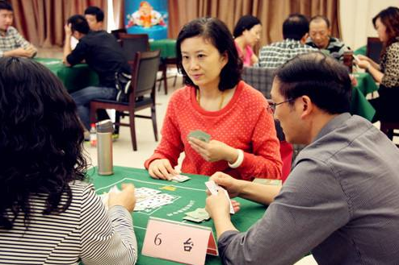
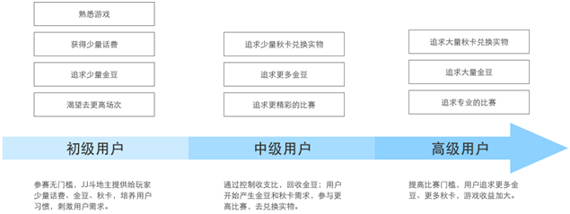
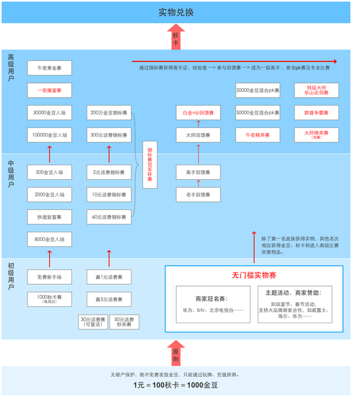
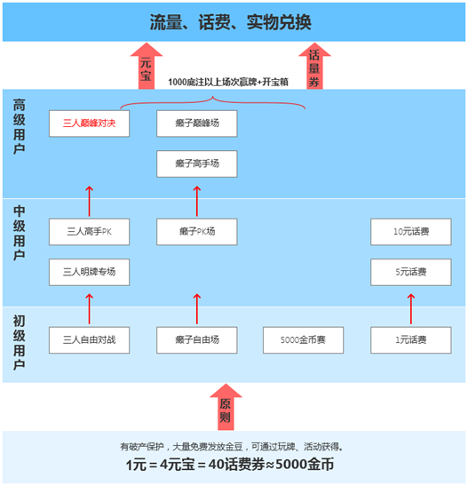
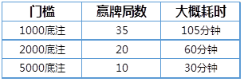
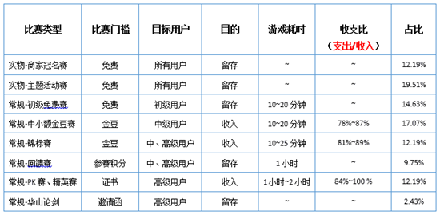
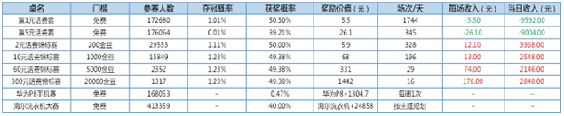
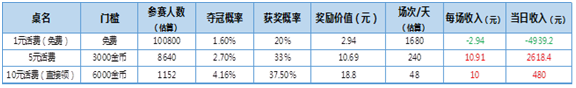

我国著名经济学家周其仁曾说：中国经济若想突围，唯有创新才是王道。其实棋牌游戏行业，又何尝不是如此。在JJ之前，谈到斗地主，所有人脑中的第一反应估计就是腾讯。而在07年以后，JJ斗地主横空出世，创新的比赛打法不但打破腾讯对公共领域棋牌的垄断局面，更是将棋牌游戏这潭水给“搅活了”。创新、突围、差异化竞争，可以这么说，在某种程度上，JJ让不少从业人员看到了棋牌游戏更多的可能。
走出一条新路
众所周知，棋牌不比其他类型的游戏，本身的玩法很难言及创新性，几十年来规则基本没变过。在JJ看来，创新的思路不在于玩法，而在于模式。2007年，竞技世界（北京）有限公司正式成立，JJ斗地主踏上征程。据说，公司的几名创始人都是棋牌爱好者，业余时间常上网游斗地主、打麻将。不过，在游戏过程中，他们不时会碰到网友联合“做笼子”(指合伙作弊)，令他们觉得玩起来不过瘾。“要是能把这些好玩的游戏做成奥运会比赛的形式，保证公平性，肯定很有意思”。
成立之初，JJ就有清晰的目标：专做民间传统的棋牌游戏，比如麻将、象棋、双升、斗地主等，并将其竞技化运作。当时，QQ游戏、联众等网游公司，已经在棋牌游戏这一块做出成就，但创始人之一的张廷松认为，只要坚持走竞技化的道路，有创新的模式，公司肯定能做起来。
经过一段时间的摸索，网游平台正式上线。刚开始，因为没有名气，推广非常不易，刚开始几乎没有玩家，公司员工就邀请自己的亲朋好友来玩，“打一场比赛，人凑不齐是常有的事。”到后来，因为有竞技的乐趣，慢慢被玩家所接受。
线上线下同时发力
随着线上玩家数量的不断增多，许多玩家提出想面当面实地竞技。从2009年开始，竞技世界推出了线下的JJ大赛。这样的线下比赛，分城市进行，最后，各个地区的高手，会汇聚到北京，参加年度总决赛。“棋牌没有正规的比赛，但却是老百姓很喜欢的项目，我们就是要做出专业比赛的感觉来。”张廷松说，正因为线下比赛很专业，一些围棋、象棋的专业选手也会慕名参加。

每年的JJ比赛中，斗地主、德州扑克、麻将等都是主要项目，长沙、广州、太原、大连、西安、武汉等城市，都举办过类似的线下比赛。 据悉，这类线下比赛向所有参与者免费开放。张廷松告诉记者，公司的主要盈利模式就是购买线上的道具，即积分。比如不少玩家觉得自己水平不错，不想从最初开始打起，就购买积分，直接进入高手区进行比赛。
当然，最受用户喜爱的，还是参加线上的JJ斗地主比赛能获胜能获得一定的奖品——大米、话费等。那么，JJ斗地主的比赛模式到底怎么样的流程，相较于传统棋牌游戏有哪些优势呢？为此，纹桃（微信公众号：wanghukeji）收集了一些关于JJ斗地主的资料，与各位网友一起来探讨：
一、产品概览
1、JJ斗地主的竞争力来自用户对竞技斗地主游戏全过程的满足：
找游戏（经典玩法、欢乐玩法、癞子玩法、二人玩法…）—>选比赛（自由桌、比赛桌、免费赢奖、活动桌）—>打比赛（凭金豆、参赛卡入场，公社组队参赛，留言社交）—>得奖品（比赛赢得、秋卡兑换）
2、用户成长体系：

所选取的实物，也是根据用户成长体系而设置的，话费充值—>购物卡—>生活用品—>数码产品。
3、奖品设置：
△实物奖励具有品种多、大品牌、实用等特点；
△实物采购有协议价，用户兑换实物所需付出的价值又略高于市场价（参考京东），说明JJ还赚了实物这一块的差价利润。
二、比赛设置
JJ斗地主：

博雅斗地主：

从JJ斗地主和博雅斗地主的场次设置可知：
△JJ斗地主比赛分为两种类型：常规赛、实物赛，无论哪种赛事，都是构建在实物奖品这个终极诱惑上的；博雅斗地主场次的区分主要在于玩法，对于实物兑换的概念引导得比较弱，追求游戏娱乐性。
△JJ斗地主经济体系紧缩，较易把控收支比；博雅斗地主经济体系宽松，较难把控收支比。
△JJ斗地主实物奖励丰厚，有多种获取方式，打普通赛、实物赛均有机会；博雅斗地主实物奖励单一，获取方式有门槛且不够刺激，吸引力不高。
△JJ斗地主根据用户成长体系设置比赛和相应的实物奖励；博雅斗地主中，获得每个元宝（用于实物兑换）所需付出：

对初级用户照顾不到，仅有机会参与1元话费场，较难参与1000底注以上场次，且开宝箱获得元宝的概率较低。对于中、高级用户，只要付出一定时间即可获得元宝，不如JJ斗地主将秋卡和竞技比赛绑在一起来得刺激。
我们再来看看JJ斗地主不同赛事设置的考量是什么：

△实物+比赛，这是用户最易感知的两个关键词，从初期到后期，JJ斗地主都在不停强调这两个概念；
△常规赛兼顾收入和留存，实物赛主要是为了留存；
△实物赛在比赛总场次中占比约为32%，在拉留存场次中占比约为54%，说明JJ斗地主十分依赖于商家赞助的实物来拉留存，转移了支出让合作方承担；
△做收入的比赛场次中，面向级别越高的用户收支比越高，说明JJ斗地主非常重视回报率，刺激用户不断参加比赛；
△实物赛根据实物价值，安排不同的赛制（瑞士移位、猎人赛、立出局）：实物价值越高，赛制越复杂，人均耗时越长；
△做收入的比赛一般采用人满即开的比赛方式，做留存的比赛一般采用定时开赛的比赛方式，保证成本可控。
三、实物比赛
现在详细分析JJ斗地主和博雅斗地主关于实物奖励的比赛场次。
JJ斗地主：

从充值看，1元=1000金豆；从兑换看，1元=100秋卡。乍看一下，做留存的比赛大部分在送钱给用户，做收入的比赛收支比太高，收益空间又不大，会以为JJ斗地主入不敷出。随着深入研究，会发现，尽管JJ斗地主经济体系严格遵守1元=100秋卡=1000金豆，但这之间大有文章——
第一，游戏大部分的支出都在于金豆，而非秋卡。金豆是参与比赛的消耗品，而秋卡才是能直接进行实物兑换的。第二，系统仅支持秋卡兑换成金豆，不支持金豆兑换成秋卡，说明1000金豆等于100秋卡仅是一个假象。第三，支出最大的实物赛，如华为P8手机赛、海尔洗衣机大赛，用户参与门槛却为0，JJ斗地主不可能付出大心力为别的商家打广告，我们有理由认为，JJ斗地主转移了大半成本到合作商处。
综上可知，严格控制能兑换实物的秋卡数量，大量发放刺激用户多参与比赛的金豆，尽量转移成本让合作商家承担，就是JJ模式的秘诀。
博雅斗地主：

从充值上看，1元≈5000金币；从兑换上看，1元=4元宝=40话费券。但是博雅斗地主采用的是宽松的经济体系，会通过破产保护、签到、活动等方式大量发送金币，所以该表格仅能反映趋势。但已能发现，在实物比赛场中，博雅斗地主完全依靠自己采购话费、流量来做留存，成本由自己承担。只要获得一定实物，用户对产品体验的容忍度很高。
而通过用户的反馈情况，纹桃(微信公众号：wanghukeji)发现：出现次数最多的奖品关键词是：话费、大米。差评主要集中在网络不好、闪退、系统维护期间导致的金豆和秋卡损失。总的来说，JJ斗地主作为一款引流产品，无疑是成功的，也成功的区分了一般玩家与重度玩家。用户从斗地主大量转入JJ其他更具有博彩性的游戏，大量消耗金豆，刺激充值。而纹桃在实际游戏过程中也发现，JJ的金三顺、德州、赢三张、九莲灯等游戏都是金豆消耗较高的，充值比例也普遍比斗地主高。引流游戏+盈利游戏，这样的经典组合应该值得所有棋牌游戏运营商借鉴。纹桃科技致力于棋牌游戏开发13年，拥有大量开发运营经验和大批成功案例。
想打造一款迅速盈利的棋牌游戏，欢迎咨询电话热线：18711739336
了解更多棋牌游戏行业信息：在线咨询>>


游戏产品
PRODUCTS

售后服务
SERVICE

技术支持
TECHNOLOGY

运营指导
OPERATING